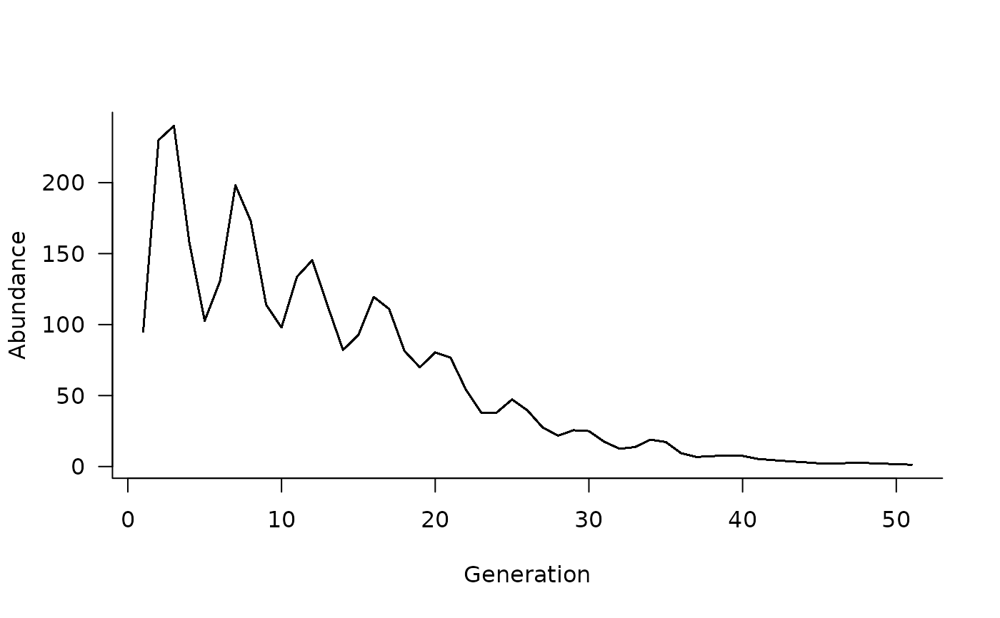

Specify relationship between a vector or matrix of covariates and vital rates.
covariates(masks, funs) format_covariates(x, aux = NULL, names = NULL)
| masks | a logical matrix or vector (or list of these)
defining cells affected by |
|---|---|
| funs | a function or list of functions with one element
for each element of |
| x | a vector, matrix, or data.frame of time-varying covariate values with one element or row per time step |
| aux | additional, static arguments to be passed to a covariates function |
| names | optional vector of names for each covariate
included in |
Masks must be of the same dimension as the population
dynamics matrix and specify cells influenced by covariates
according to funs. Additional details on masks are
provided in masks.
Functions must take at least one argument, a vector or matrix representing the masked elements of the population dynamics matrix. Incorporating covariate values requires a second argument. Functions must return a vector or matrix with the same dimensions as the input, modified to reflect the effects of covariates on vital rates.
Additional arguments to functions are supported and can be
passed to simulate with the args,
args.dyn, or args.fn arguments.
format_covariates is a helper function
that takes covariates and auxiliary values as inputs and
returns a correctly formatted list that can be passed
as args to simulate.
# define a population matrix (columns move to rows) nclass <- 5 popmat <- matrix(0, nrow = nclass, ncol = nclass) popmat[reproduction(popmat, dims = 4:5)] <- c(10, 20) popmat[transition(popmat)] <- c(0.25, 0.3, 0.5, 0.65) # define a dynamics object dyn <- dynamics(popmat) # can add covariates that influence vital rates # e.g., a logistic function covars <- covariates( masks = transition(popmat), funs = function(mat, x) mat * (1 / (1 + exp(- 10 * x))) ) # simulate 50 random covariate values xvals <- matrix(runif(50), ncol = 1) # update the dynamics object and simulate from it. # Note that ntime is now captured in the 50 values # of xvals, assuming we pass xvals as an argument # to the covariates functions dyn <- update(dyn, covars) sims <- simulate( dyn, init = c(50, 20, 10, 10, 5), nsim = 100, args = list( covariates = format_covariates(xvals) ) ) # and can plot these simulated trajectories plot(sims)